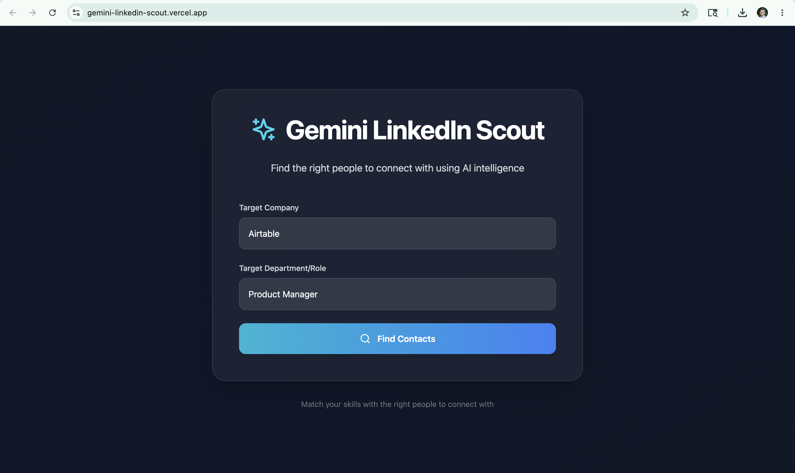
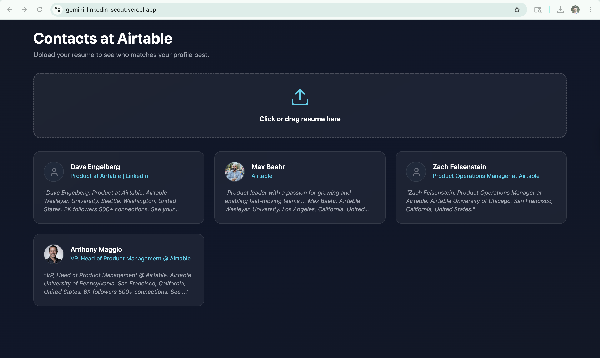
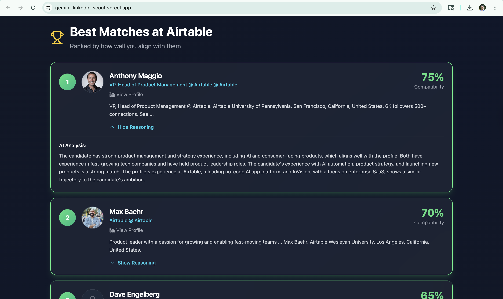

Enter a company + role. Get a ranked list of LinkedIn contacts scored against your resume — with AI reasoning for every match.
Built for job seekers who want to network smarter — no manual searching, no guessing who to reach out to.
Type the company you're targeting and the department or role — e.g. "Airtable" and "Product Manager." Hit Find Contacts and the app kicks off the discovery pipeline.

Landing Page
Contacts GridThe app returns a grid of relevant LinkedIn profiles at that company. Drop in your resume (PDF) to trigger the AI scoring engine.
Gemini scores every contact against your resume and returns a ranked list with compatibility percentages and an AI Analysis block explaining exactly why each person is a strong match for your background.

Ranked ResultsReact talks directly to n8n via webhooks. n8n handles everything else — scraping, scoring, and writing results back to Supabase.
n8n allowed rapid workflow prototyping without maintaining a full backend codebase. Each node is visual and independently debuggable — critical for a solo build where iteration speed matters most.
Full control over execution environment, no per-execution pricing limits, and the ability to run long Apify scraping jobs without cloud timeouts.
Raw scraping results are noisy. Ranking by resume-to-profile alignment makes the outreach list immediately actionable — you know exactly who to prioritise and why, without any manual filtering.
Type safety on Supabase query responses and webhook payloads caught several schema mismatches during development. With 93.5% TS coverage across 75 commits, the codebase is significantly more maintainable.
Instant PostgreSQL with a UI-first table editor, an auto-generated REST API, and a JS client that works directly from the frontend — no ORM or migration pipeline for a solo build.
User authentication and saved search history were deliberately deferred to ship a working end-to-end flow first. Both are buildable on the existing Supabase Auth stack when needed.
Vercel Web Analytics · Last 30 days
MBA candidate at Simon Business School (University of Rochester), graduating May 2026. 5+ years of product management experience across consumer mobility, logistics, and B2B SaaS. Built this solo — as PM, designer, and developer — to solve a real problem I was facing during my own job search.
No account needed. Enter a company and a role to get started.